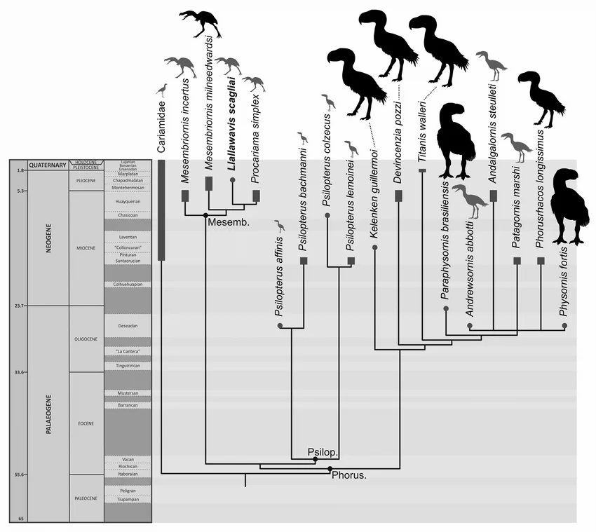
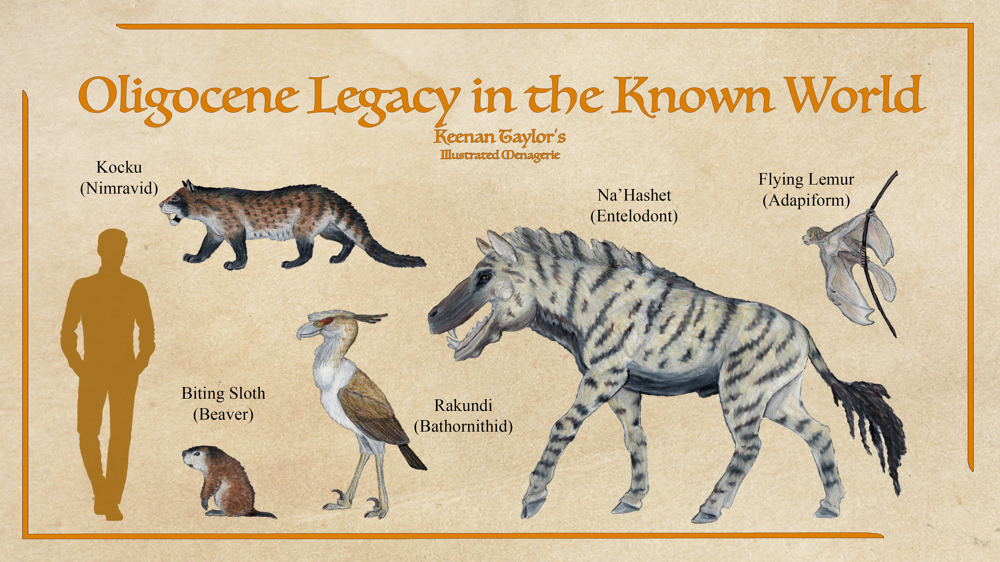
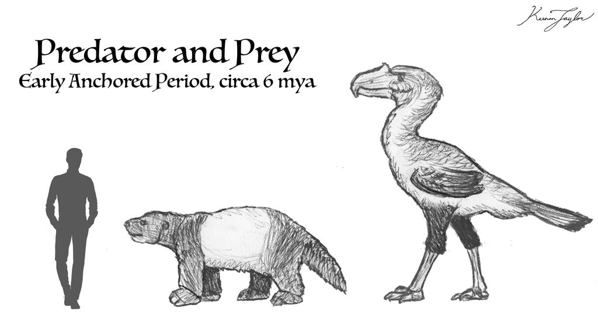
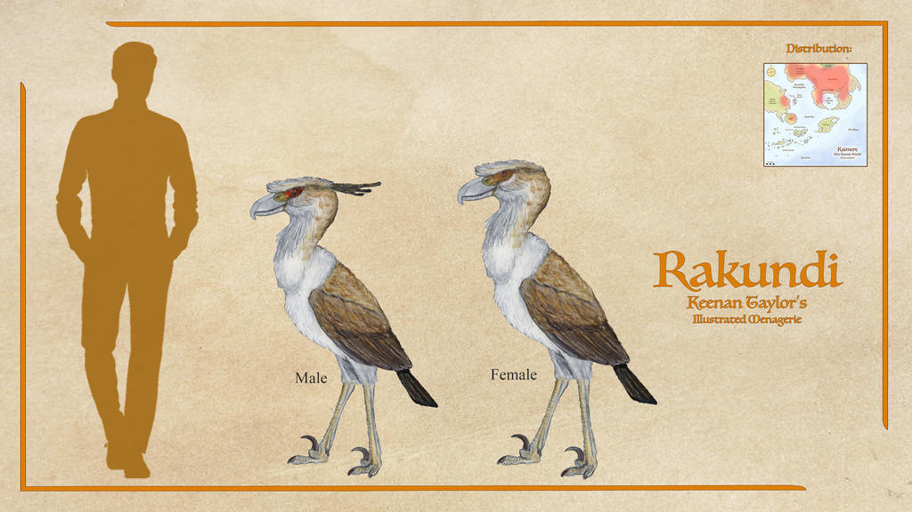
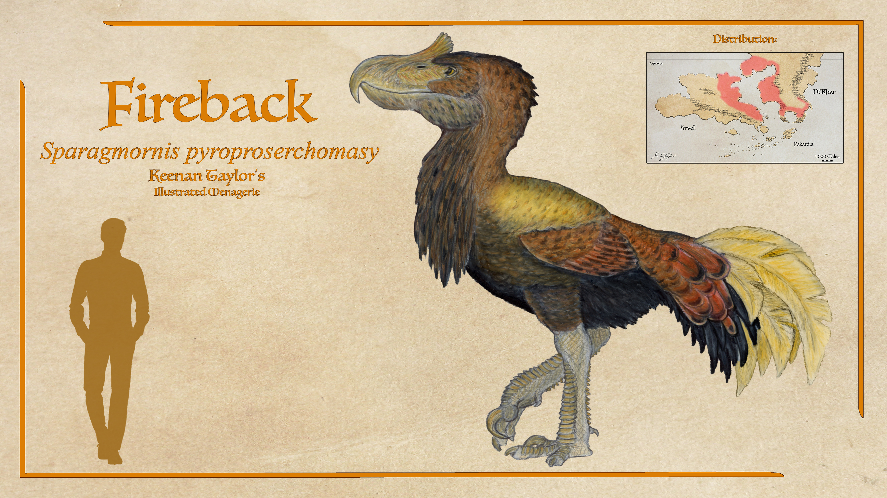
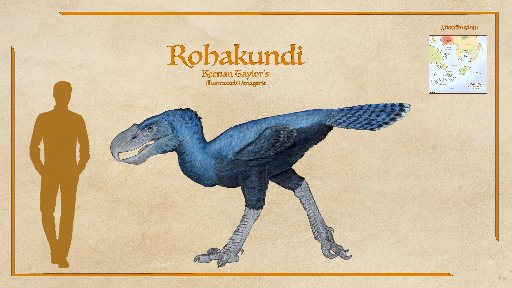
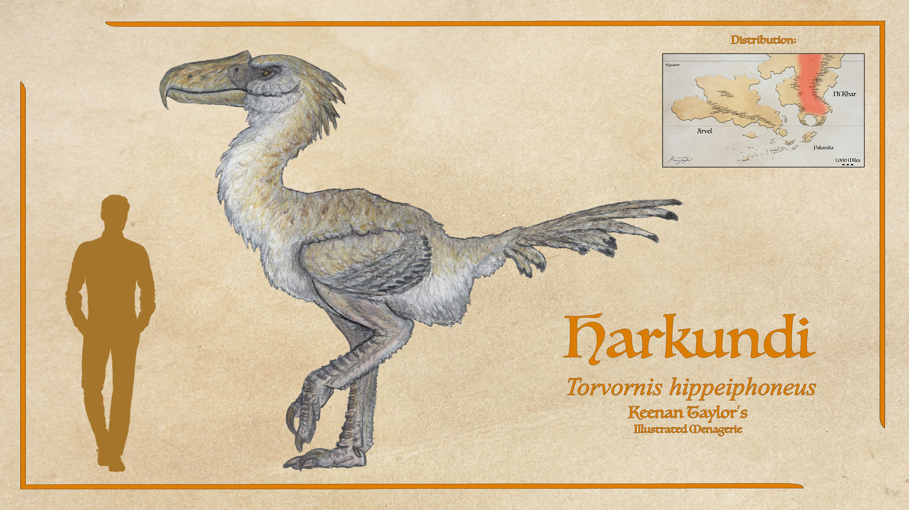

Scientific Classification
| Kingdom | Animalia | Animalia | Animalia |
|---|---|---|---|
| Phylum | Chordata | Animalia | Animalia |
| Class | Aves | Animalia | Animalia |
| Infraclass | Neognathae | Animalia | Animalia |
| Clade | Passerea | Animalia | Animalia |
| Clade | Telluraves | Animalia | Animalia |
| Clade | Australaves | Animalia | Animalia |
| Order | Cariamiformes | Animalia | Animalia |
Taxonomic note: Cariamiformes is a clade of birds traditionally associated with the seriemas and their extinct relatives. Historically, their relationships were poorly understood, and seriemas were frequently placed among the Gruiformes, the diverse assemblage commonly referred to as cranes and crane-like birds. This classification was based largely on similarities in general body form and terrestrial ecology rather than close evolutionary relationship.
01 · INTRODUCTION
Overview

Cariamiformes are primarily terrestrial birds, although the group historically included species with considerably greater aerial capabilities than the large flightless forms for which it is best known. Their anatomy reflects repeated adaptation toward life on the ground. Long hindlimbs, strong pelvic structures, relatively large feet, and robust bills became recurring features among terrestrial members of the group. The degree of terrestrial specialization varied considerably. Small-bodied forms could occupy generalized omnivorous or insectivorous niches, while larger members became increasingly specialized predators. The most extreme examples were the terror birds, whose entire body plan became adapted toward pursuing, ambushing, subduing, and processing terrestrial prey. On Earth, this trend reached its most spectacular expression among the phorusrhacids. Terror birds ranged from relatively small forms specializing on small prey to enormous predators approaching three metres in height. Their skulls were often proportionally large and equipped with powerful hooked bills, while their legs were adapted for rapid terrestrial movement. Contrary to their popular depiction as universally gigantic pursuit predators, phorusrhacids were ecologically diverse. Some specialized in small prey, while others were large ambush predators capable of killing substantial vertebrates.
Kaimere's cariamiforms display an even broader range of adaptations. The bathornithids represent one of the oldest lineages introduced to the planet and have survived in reduced form despite competition with Kaimere's indigenous predatory dinosaurs. The phorusrhacids underwent a much later and more consequential introduction, eventually becoming some of the most important vassal predators of the Known World. Their success is particularly notable because Kaimere possesses an unusually dense community of large terrestrial predators. A large predatory bird cannot simply occupy the same ecological role that a terror bird occupied on Earth. Instead, Kaimere's cariamiforms have undergone extensive niche partitioning.
The harkundi, for example, dominates the pursuit-predator niche of the Houze Prairie. Rather than behaving like the stocky ambush predators represented by many large terrestrial phorusrhacids on Earth, it has become a highly specialized cursorial predator. The fireback occupies wetter lowland forests and wetlands, where it specializes on large, relatively slow prey. The rohakundi is smaller and more secretive, occupying dense forest and highland environments while displaying a partially arboreal lifestyle. The three consequently coexist despite competing broadly for large terrestrial prey.
This division of ecological space is characteristic of Kaimere's cariamiform radiation. Rather than replacing one another through direct competition, related species have evolved different combinations of body size, locomotion, hunting behavior, activity patterns, and habitat preference.
02 · DEEP TIME
Evolutionary History
Origins on Earth
The earliest history of Cariamiformes remains incompletely understood, but the lineage appears to have originated during the early Paleogene, probably shortly after the Cretaceous–Paleogene extinction approximately 60 million years ago. The disappearance of the non-avian dinosaurs left terrestrial ecosystems throughout the world profoundly reorganized, creating opportunities for surviving avian lineages to expand into ecological roles formerly occupied by other groups.
By the Eocene, cariamiforms had already diversified substantially. Different lineages occupied parts of North America, Europe, and South America. The Bathornithidae became particularly important in North America, while European ecosystems contained representatives of the Idiornithidae and Ameghinornithidae. South America became the center of the evolutionary history of the phorusrhacids and the eventual home of the seriemas.
South America's prolonged geographic isolation was especially important. With large placental terrestrial predators largely absent from the continent, cariamiform birds were able to expand into predator niches that elsewhere were increasingly occupied by mammals. The resulting radiation produced the terror birds, which persisted for tens of millions of years and evolved repeatedly toward increasingly large body sizes. The phorusrhacids were not simply oversized versions of modern predatory birds. Their evolution produced multiple ecological strategies, including small-game specialists, wetland predators, generalist hunters, and enormous terrestrial predators. Some approached three metres in height and possessed skulls capable of delivering powerful strikes to prey.
The Oligocene Harvest and the Bathornithids

The first major introduction of Cariamiformes to Kaimere occurred during the Oligocene Harvest approximately 31 million years ago. Bathornithids were among the lineages transported to the planet during this event. The Kaimeran history of the bathornithids subsequently diverged dramatically from their history on Earth. Their descendants encountered ecosystems containing numerous large predatory dinosaurs and other terrestrial hunters that had no close equivalent in their native environments. Many of the smaller and more generalized bathornithids were eventually eliminated through competition, particularly as cockatrice diversified.
The largest bathornithids proved more resilient. Their substantial body size allowed them to occupy predator niches that smaller species could not, producing a fauna superficially reminiscent of the giant phorusrhacids of South America despite the two groups being only distantly related.
This radiation ultimately left a particularly unusual survivor. The rakundi represents the last known bathornithid of the Known World. Unlike the native Kaimeran terror birds, it is not a phorusrhacid and should not be regarded as a dwarf terror bird. Its ancestry instead traces to bathornithids that persisted elsewhere on Kaimere.
Approximately one million years ago, descendants of the eastern continental bathornithids entered the Known World following the expansion of the Houze Prairie. The rakundi subsequently became specialized for this environment, where it faces intense competition from cockatrice and other terrestrial predators. The rakundi's survival has been strongly influenced by its ability to fly. Its ancestors were apparently pushed toward increasingly aerially proficient behavior by competition with cockatrices. In the Known World, this adaptation is especially important because the rakundi must also compete with teratorns, highly proficient flying predators specializing in small game.
The Miocene South American Harvests
The second major chapter in the history of Kaimere's cariamiforms began with the introduction of South American fauna. Phorusrhacids were first harvested approximately 13.5 million years ago, during the Middle Miocene. Their initial influence was limited. At the time, much of the Known World consisted of dense rainforest, environments poorly suited to the open-country predators that characterized many terror birds. The initial introduction therefore failed to establish the spectacular radiation that would later occur.

The situation changed during the Great Sloth Harvest, approximately 6 million years ago. This event was associated with extensive faunal and floral replacement in southern Ni'Khar following mass eutrophication. South American organisms were introduced into newly altered ecosystems, most famously the giant sloths from which the Harvest takes its name. Terror birds arrived during this period as well.
The ecological conditions were now substantially more favorable. Large South American herbivores provided abundant prey, while the developing forests and open habitats of the Anchored Period supplied a range of environments in which phorusrhacids could diversify. For several million years, terror birds became important components of Kaimere's terrestrial predator communities.
Unlike their Earth counterparts, however, Kaimeran phorusrhacids never became true apex predators. The enormous megaraptorans occupied the highest terrestrial predatory tier, while cockatrice, mammalian predators, and other large hunters competed with the birds for food. Instead, phorusrhacids became specialized vassal predators, occupying an intermediate level between the smaller terrestrial predators and Kaimere's enormous monarch predators. Their importance should not be underestimated. Although they do not occupy the absolute apex, their abundance and predatory specialization make them keystone components of many forests and prairies.
Modern Kaimeran Radiation and Vassal Predator Position
The Kaimeran phorusrhacids eventually diverged into several distinct ecological forms. The modern fauna includes three major terror birds in the Known World: the harkundi, the fireback, and the rohakundi. The evolutionary relationships among these birds remain imperfectly understood. The harkundi appears to descend from a relatively small phorusrhacid lineage comparable in general form to Psilopterus, although its exact ancestry remains unresolved. The fireback and rohakundi appear to share a more recent ancestry associated with the lineage that produced Titanis. This distinction is significant because the three modern birds do not simply represent different populations of a single ecological radiation. Their differences reflect separate evolutionary histories and repeated specialization.
The Anchored Period represented the high point of terror-bird diversity on Kaimere. Numerous phorusrhacids occupied the Known World, filling predator niches across forests, wetlands, and open country. Their fortunes changed approximately 1.5 million years ago. The arrival of a new genus of cockatrice from Kairul introduced highly competitive terrestrial predators into ecosystems already occupied by the phorusrhacids. At approximately the same time, climatic changes altered habitats and prey distributions. The combination proved particularly damaging to the smaller terror birds. Many disappeared as cockatrices expanded into the same ecological spaces, while others were displaced by mammalian predators and larger native dinosaurs. The surviving species persisted through specialization. The fireback retained its position by exploiting very large prey in lowland forests and wetlands. The rohakundi survived through smaller body size, nocturnal behavior, and use of forest canopies. The harkundi became increasingly specialized for pursuit predation in the Houze Prairie, where its speed and endurance allowed it to exploit a niche that competing predators could not completely monopolize.
The persistence of these birds is ultimately explained by their ability to occupy ecological positions that larger predators cannot efficiently exploit. Kaimere's enormous megaraptorans dominate the highest levels of the terrestrial food web, but their size imposes ecological limitations. They cannot efficiently exploit every available prey item or habitat. Cariamiformes fill many of these gaps. The fireback specializes in large but relatively slow prey in lowland forests and wetlands. The rohakundi occupies denser and more vertically complex forests, particularly where larger predators are less common. The harkundi dominates open prairie pursuit, while the rakundi survives through a combination of terrestrial hunting and flight. These birds consequently represent more than relics of an extinct Earth radiation. They have become integral components of Kaimere's ecosystems. Their evolutionary history demonstrates how repeated introductions of related organisms can produce radically different outcomes when those organisms encounter an ecosystem containing an entirely different set of competitors and predators. On Earth, the great radiation of Cariamiformes culminated in the terror birds and eventually contracted until only the seriemas survived. On Kaimere, the same ancient lineage received multiple opportunities to diversify. The result is a second radiation in which bathornithids and phorusrhacids have survived alongside dinosaurs and mammals, producing a community of large predatory birds unlike anything known from Earth's modern ecosystems.
03 · SPECIES ACCOUNTS
Known Diversity
The following accounts document representative cariamae recorded in the encyclopedia. Select a species to consult its individual natural history and descriptive account.
Rakundi

Scientific placement to be confirmed
The rakundi is a large predatory bird that shares the Houze Prairie with the harkundi. While they were long assumed to be a dwarf species of terror bird, they are in fact the last bathornithid of the Known World, having come from Kairul around half a million years ago following the spread of houze grass. Bathornithids are distantly related birds which have been in Kaimere since the Oligocene. While many are small generalists, most have been outcompeted by cockatrices, leaving giant bathornithids similar to terror birds as the majority of the relics. The rakundi has only survived by targeting small game and flying to evade predation and competition from cockatrices.
Read species article →Fireback

Sparagmornis pyroproserchomasy
Most common and biggest of the large Kaimeran phorusrhacids is the fireback or urushai in the common tongue, the terror bird of the mainland forests. If the sprinting harkundi is the antithesis of large terror birds we know of our fossil record here on Earth, the fireback is the quintessential taken to an extreme. Cocks can weigh up to seven hundred kilos and stand over two meters at the hip, making them the largest member of this clade known to science. They are able to sprint up to thirty miles per hour over short distances, meaning they can catch fast prey if they successfully ambush, but for the most part they prefer slower armored game. Weighing in at nearly a thousand pounds and a hip height of over six feet or two meters, this is the largest phorusrhacid of Earth or Kaimere.
Read species article →Rohakundi

Scientific placement to be confirmed
The rohakundi or 'hunger of the starry night', is a smaller yet still daunting predator. While technically crepuscular, they represent the counterpart of the daytime hunters from Arvel. Rohakundi are solitary hunters, and have a degree of arboreality, which they use to sleep out of the reach of their larger cousins the firebacks and the massive zentaur in their habitat. Black cockatrice are quite rare in Ni'Khar, and rohakundi are more common in the denser highland forests because of it. They are generally skittish, unlike their more aggressive cousins, and avoid human settlements.
Read species article →Harkundi

Torvornis hippeiphoneus
The harkundi means 'he runs on the wind' in the language of the Dolani nomads, referring to how they appear to fly on the grass during a sprint. Like their cousins, the phorusrhacids of Earth, it is flightless. It resides in the vast prairies north of the Cha'Khati Empire. The prairie grass, called houze grass, is a fast-growing and aggressive plant that has displaced what was once a diverse grassland, and now is one of the only plants found in these prairies. It is low in nutrients and difficult for many animals to digest. Mammalian ungulates are one of the few herbivores that can process it, making the Houze Prairies one of the few regions in Kaimere that mammals are the dominant herbivores. With this change, the predators that specialize in these swift ungulates are the ones that rule the steppes. The harkundi is one such predator.
Read species article →04 · CLASSIFICATION
Taxonomic Notes
This section records uncertainties, disputed relationships, and proposed revisions to the family's classification. Confirmed taxa should be distinguished from tentative identifications and provisional placements.
Where an animal's appearance suggests membership in Felidae but its ancestry has not been established, resemblance alone should not be treated as sufficient evidence of taxonomic inclusion.